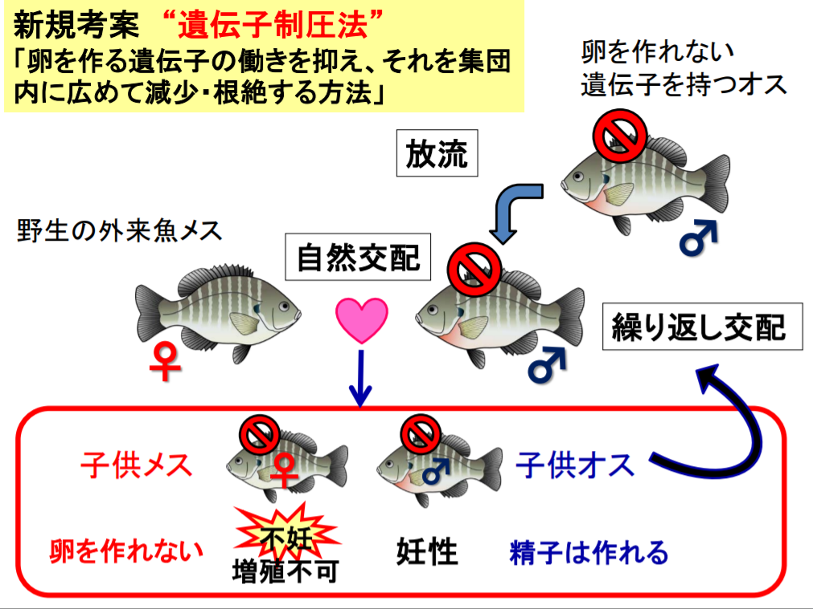

アメリカザリガニの生態
アメリカザリガニは農業用水やため池など様々な水域に生息している。 高水温や低酸素、水質汚染にも耐性があり、全国各地の様々な水辺に定着し、繁殖している。 雑食性であり、植物や水生昆虫、魚類等の動物など様々な動植物を餌としている。

アメリカザリガニの国内への流入理由
環境省によると食用としてウシガエルを養殖しようとした際に餌としてアメリカザリガニを国内に持ち込んだのが最初とされている。 そこから逃げ出したアメリカザリガニが近隣の水辺で繁殖し、生息域を広げていったものとされる。 また、人の手によって持ち運ばれ、アメリカザリガニの生息域が広がったケースも多く見られる。 なおウシガエルは、在来種への大きな被害を及ぼしたことにより「特定外来生物」に指定されている。
アメリカザリガニによる被害
生態系への影響
アメリカザリガニは池の水草を食べ尽くし、それを餌としていた在来種の生物たちの生態系に影響を及ぼす。
農林水産業への被害
アメリカザリガニが掘った巣穴によって水田などの漏水を引き起こしている。 それによって水稲の収穫量の減少やドジョウの養魚場における食害が報告されている。
アメリカザリガニへの対策
法整備による対策
現在日本ではアメリカザリガニは輸入や放流を規制し、違反者に罰則を課すことができる「特定外来生物」には指定されていない。 「特定外来生物」に指定すると、飼育が原則禁止され、指定前から飼育していた場合に申請を行わなければ飼育することが出来ない。 それの申請を煩わしく感じた飼育者が近くの川や池に放流する飼育者が続出し、アメリカザリガニによる被害がより深刻になる場合があるためである。
そのため、飼育を禁止せずに放流などを規制できるような法整備が進められている。
ブルーギルの遺伝子編集の研究からの応用
釣りや網による駆除方法では、年に何度も行わなければならず労力がかかり、交配可能な個体が数匹残ってしまうだけで数年後に大量発生を引き起こす恐れがある。 この問題を解決するために、「特定外来種」であるブルーギルを対象に研究が進められているのが、遺伝子抑圧方式である。
遺伝子制圧方式
これは、メスを不妊化する遺伝子を持つオスの個体を放流し、そのオスが交配することで不妊化したメスの個体を生み出し、個体数を減らしていくという方法である。
メリット
メス不妊化遺伝子を持つオスのみを放流するため大量放流による急激な個体数による増加の被害を少なくできることや再増加の可能性を小さくできる点がある。
デメリット
遺伝子情報に操作を加えるため、放流した場合の遺伝子汚染が広がる可能性がある。 ジカ熱媒介蚊の際に使われた遺伝子編集と比べ、今回研究されている遺伝子操作は、継続的な放流を行わなければ不妊化遺伝子は消滅されるとしているが、異種の魚と交配した場合など、実証実験が行われなければ不明なことも多い。
アメリカザリガニへの応用
https://www.env.go.jp/policy/kenkyu/special/houkoku/data_h28/pdf/4-1408.pdf遺伝子制圧方式は現在ブルーギルを対象とした研究が進められているが、同じく水生動物であるアメリカザリガニへの応用も大いに期待ができる。
実際に2018-2019年度の国立研究開発法人 水産研究・教育機構による報告書において期待できる主たる成果として「他の外来生物種への応用」が述べられている。